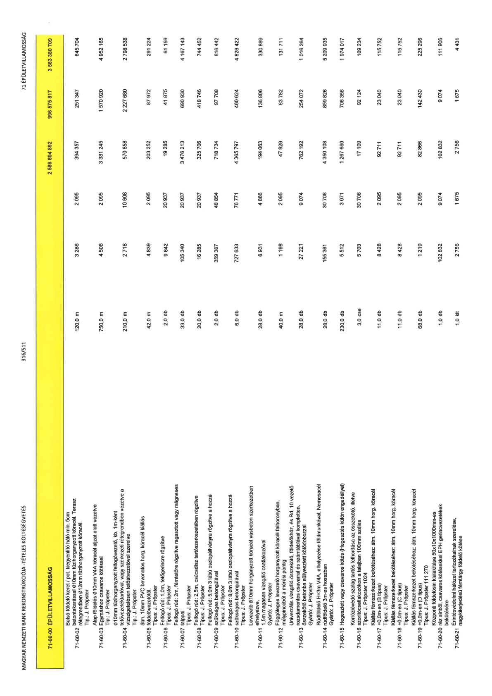

| Tétel | Menny. | Egys. | Anyag e.ár (net HUF) | Díj e.ár (net HUF) | Anyag összesen (net HUF) | Díj összesen (net HUF) | Anyag+Díj összesen (net HUF) |
|---|---|---|---|---|---|---|---|
| 71-00-00 ÉPÜLETVILLAMOSSÁG | NaN | NaN | 0 | 0 | 2 586 804 892 | 996 575 817 | 3 583 380 709 |
| Belső földelő keret / pot. kiegyenlítő háló min. 5cm betontakarással Ø10mm tüzihorganyzott köracél. Terasz rétegrendben Ø12mm tüzihorganyzott köracél. Tip.: J. Pröpster | 0 | 0 | 0 | 0 | 0 | 0 | 0 |
| 71-60-02 | 120,0 | m | 3 286 | 2 095 | 394 357 | 251 347 | 645 704 |
| Alap földelés Ø10mm V4A köracél aljzat alatt vezetve Egymáshoz csavaros kötéssel Tip.: J. Pröpster | 0 | 0 | 0 | 0 | 0 | 0 | 0 |
| 71-60-03 | 750,0 | m | 4 508 | 2 095 | 3 381 245 | 1 570 920 | 4 952 165 |
| Ø10mm tüzihorganyzott felfogóvezető, kb. 1m-ként tetővezetéktartóval, vagy szerkezeti rétegrendben vezetve a vízszigetelésen tetőátvezetővel szerelve Tip.: J. Pröpster | 0 | 0 | 0 | 0 | 0 | 0 | 0 |
| 71-60-04 | 210,0 | m | 2 718 | 10 608 | 570 858 | 2 227 680 | 2 798 538 |
| átm. 10mm PVC bevonatos horg. köracél kiállás földelővezetőtől. Típus: J. Pröpster | 0 | 0 | 0 | 0 | 0 | 0 | 0 |
| 71-60-05 | 42,0 | m | 4 839 | 2 095 | 203 252 | 87 972 | 291 224 |
| Felfogó rúd: 1,0m, tetőgerincre rögzítve Típus: J. Pröpster | 0 | 0 | 0 | 0 | 0 | 0 | 0 |
| 71-60-06 | 2,0 | db | 9 642 | 20 937 | 19 285 | 41 875 | 61 159 |
| Felfogó rúd: 2m, fémtetőre rögzítve ragasztott vagy mágneses talppal Típus: J. Pröpster | 0 | 0 | 0 | 0 | 0 | 0 | 0 |
| 71-60-07 | 33,0 | db | 105 340 | 20 937 | 3 476 213 | 690 930 | 4 167 143 |
| Felfogó rúd: 2,5m, csúcsdísz tartószerkezetében rögzítve Típus: J. Pröpster | 0 | 0 | 0 | 0 | 0 | 0 | 0 |
| 71-60-08 | 20,0 | db | 16 285 | 20 937 | 325 708 | 418 746 | 744 452 |
| Felfogó rúd: 5,0m 3 lábú oszlopállványra rögzítve a hozzá szükséges betongúlával Típus: J. Pröpster | 0 | 0 | 0 | 0 | 0 | 0 | 0 |
| 71-60-09 | 2,0 | db | 359 367 | 48 854 | 718 734 | 97 708 | 816 442 |
| Felfogó rúd: 8,0m 3 lábú oszlopállványra rögzítve a hozzá szükséges betongúlával Típus: J. Pröpster | 0 | 0 | 0 | 0 | 0 | 0 | 0 |
| 71-60-10 | 6,0 | db | 727 633 | 76 771 | 4 365 797 | 460 624 | 4 826 422 |
| Levezető Ø10mm horganyzott köracél vasbeton szerkezetben elhelyezve, 1,5m magasan vizsgáló csatlakozóval Gyártó: J. Pröpster | 0 | 0 | 0 | 0 | 0 | 0 | 0 |
| 71-60-11 | 28,0 | db | 6 931 | 4 886 | 194 063 | 136 806 | 330 869 |
| Függőleges levezető horganyzott köracél falhoronyban, mélypincéből a mérési pontig | 0 | 0 | 0 | 0 | 0 | 0 | 0 |
| 71-60-12 | 40,0 | m | 1 198 | 2 095 | 47 929 | 83 782 | 131 711 |
| Univerzális vizsgáló-összekötő, földelőkhöz, és Rd. 10 vezető rozsdamentes csavarral és számtáblával kompletten, összekötő betonba süllyesztett kötődobozzal Gyártó: J. Pröpster | 0 | 0 | 0 | 0 | 0 | 0 | 0 |
| 71-60-13 | 28,0 | db | 27 221 | 9 074 | 762 192 | 254 072 | 1 016 264 |
| Rúdföldelő H=3m V4A, elhelyezése földmunkával, Nemesacél rúdföldelő 3m-es hosszban Gyártó: J. Pröpster | 0 | 0 | 0 | 0 | 0 | 0 | 0 |
| 71-60-14 | 28,0 | db | 155 361 | 30 708 | 4 350 108 | 859 826 | 5 209 935 |
| Hegesztett vagy csavaros kötés (Hegesztés külön engedéllyel) | 0 | 0 | 0 | 0 | 0 | 0 | 0 |
| 71-60-15 | 230,0 | db | 5 512 | 3 071 | 1 267 660 | 706 358 | 1 974 017 |
| Korrózióvédő szalag tartós felhordása az összekötő, illetve szorítócsatlakozókon a talajban 100mm széles Típus: J. Pröpster 1024 | 0 | 0 | 0 | 0 | 0 | 0 | 0 |
| 71-60-16 | 3,0 | cse | 5 703 | 30 708 | 17 109 | 92 124 | 109 234 |
| Kiállás fémszerkezet bekötéséhez: átm. 10mm horg. köracél +0,0m-en (B típus) Típus: J. Pröpster | 0 | 0 | 0 | 0 | 0 | 0 | 0 |
| 71-60-17 | 11,0 | db | 8 428 | 2 095 | 92 711 | 23 040 | 115 752 |
| Kiállás fémszerkezet bekötéséhez: átm. 10mm horg. köracél +0,0m-en (C típus) Típus: J. Pröpster | 0 | 0 | 0 | 0 | 0 | 0 | 0 |
| 71-60-18 | 11,0 | db | 8 428 | 2 095 | 92 711 | 23 040 | 115 752 |
| Kiállás fémszerkezet bekötéséhez: átm. 10mm horg. köracél +0,0m-en (D típus) Típus: J. Pröpster 111 270 | 0 | 0 | 0 | 0 | 0 | 0 | 0 |
| 71-60-19 | 68,0 | db | 1 219 | 2 095 | 82 866 | 142 430 | 225 296 |
| Központi földelősín kialakítása 50x10x1000mm-es réz sínből, csavaros kötésekkel EPH gerincvezetékek bekötésére | 0 | 0 | 0 | 0 | 0 | 0 | 0 |
| 71-60-20 | 1,0 | db | 102 832 | 9 074 | 102 832 | 9 074 | 111 906 |
| Érintésvédelmi hálózat tartozékainak szerelése, nagykiterjedésű fémtárgy földelő kötése | 0 | 0 | 0 | 0 | 0 | 0 | 0 |
| 71-60-21 | 1,0 | klt | 2 756 | 1 675 | 2 756 | 1 675 | 4 431 |
